Themeable UI directory
Measured live in Firefox 153.0.4 on Darwin. Each entry shows what the part looks like, the styles in effect, and which files in this repo style it.
Toolbars
Navigation toolbar
#nav-bar
The main toolbar holding back/forward, the address bar and the right-hand buttons.
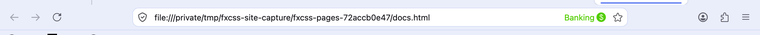
background-color: rgb(234, 238, 251)color: rgb(27, 31, 42)border-top-color: rgb(224, 224, 224)font-size: 11pxheight: 43pxopacity: 1
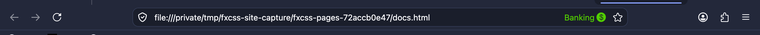
background-color: rgb(35, 40, 58)color: rgb(238, 241, 248)border-top-color: rgb(143, 143, 157)font-size: 11pxheight: 43pxopacity: 1
1 rule in this repo
| chrome/userChrome.css:35 | #nav-bar, |
Tab strip toolbar
#TabsToolbar
Container for the row of tabs. Themes often move or restyle this whole strip.
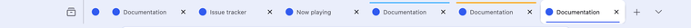
background-color: rgb(234, 238, 251)color: rgb(21, 20, 26)border-top-color: rgb(21, 20, 26)font-size: 11pxheight: 44pxopacity: 1
background-color: rgb(35, 40, 58)color: rgb(251, 251, 254)border-top-color: rgb(251, 251, 254)font-size: 11pxheight: 44pxopacity: 1
1 rule in this repo
| chrome/userChrome.css:65 | #TabsToolbar { |
Bookmarks toolbar
#PersonalToolbar
The bookmarks bar, shown here with three sample bookmarks.
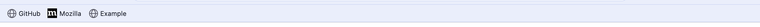
background-color: rgb(234, 238, 251)color: rgb(27, 31, 42)border-top-color: rgb(27, 31, 42)font-size: 11pxheight: 29pxopacity: 1
background-color: rgb(35, 40, 58)color: rgb(238, 241, 248)border-top-color: rgb(238, 241, 248)font-size: 11pxheight: 29pxopacity: 1
1 rule in this repo
| chrome/userChrome.css:36 | #PersonalToolbar { |
Menu bar
#toolbar-menubar
Hidden by default on macOS; on Windows this is the File/Edit/View strip.
present but not visible in this layout
color: rgb(21, 20, 26)border-top-color: rgb(21, 20, 26)font-size: 11pxopacity: 1
present but not visible in this layout
color: rgb(251, 251, 254)border-top-color: rgb(251, 251, 254)font-size: 11pxopacity: 1
no rules in this repo target it
Styled by Firefox defaults only.
Address bar
Address bar container
#urlbar
The whole address bar, including its background, border and rounding.
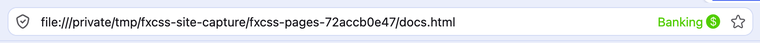
background-color: rgb(255, 255, 255)color: rgb(21, 20, 26)border-radius: 10pxborder-top-width: 1pxborder-top-color: rgb(211, 219, 245)font-size: 13.75pxheight: 32pxopacity: 1
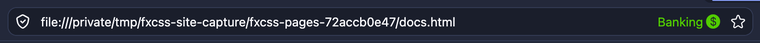
background-color: rgb(26, 30, 43)color: rgb(251, 251, 254)border-radius: 10pxborder-top-width: 1pxborder-top-color: rgb(51, 59, 85)font-size: 13.75pxheight: 32pxopacity: 1
2 rules in this repo
| chrome/userChrome.css:50 | #urlbar { |
| chrome/userChrome.css:58 | #urlbar[focused] { |
Address bar text field
#urlbar-input
The editable text itself. Colour problems with typed URLs live here.
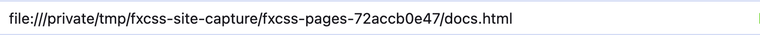
color: rgb(21, 20, 26)border-top-color: rgb(21, 20, 26)font-size: 13.75pxheight: 16.5pxopacity: 1
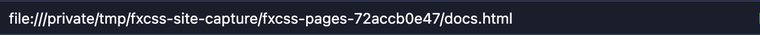
color: rgb(251, 251, 254)border-top-color: rgb(251, 251, 254)font-size: 13.75pxheight: 16.5pxopacity: 1
no rules in this repo target it
Styled by Firefox defaults only.
Site identity block
#identity-box
Padlock / permissions area at the left of the address bar.
present but not visible in this layout
color: rgb(21, 20, 26)border-top-color: rgb(21, 20, 26)font-size: 13.75pxmargin-inline-end: 6.1875pxheight: 28pxopacity: 1
present but not visible in this layout
color: rgb(251, 251, 254)border-top-color: rgb(251, 251, 254)font-size: 13.75pxmargin-inline-end: 6.1875pxheight: 28pxopacity: 1
no rules in this repo target it
Styled by Firefox defaults only.
Bookmark star
#star-button-box
The bookmark-this-page control at the right of the address bar.
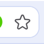
color: rgb(21, 20, 26)border-radius: 7pxborder-top-color: rgb(21, 20, 26)font-size: 13.75pxheight: 28pxopacity: 1
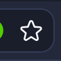
color: rgb(251, 251, 254)border-radius: 7pxborder-top-color: rgb(251, 251, 254)font-size: 13.75pxheight: 28pxopacity: 1
no rules in this repo target it
Styled by Firefox defaults only.
Container identity label
#userContext-label
Names the active tab's container (e.g. Banking) inside the address bar.
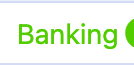
color: rgb(81, 205, 0)border-top-color: rgb(81, 205, 0)font-size: 13.75pxheight: 16.5pxopacity: 1
color: rgb(81, 205, 0)border-top-color: rgb(81, 205, 0)font-size: 13.75pxheight: 16.5pxopacity: 1
no rules in this repo target it
Styled by Firefox defaults only.
Address bar dropdown
#urlbar-results
Suggestion list shown while typing. Rendered inside the window, so it is themeable.
present but not visible in this layout
color: rgb(21, 20, 26)border-top-color: rgb(21, 20, 26)font-size: 13.75pxopacity: 1
present but not visible in this layout
color: rgb(251, 251, 254)border-top-color: rgb(251, 251, 254)font-size: 13.75pxopacity: 1
no rules in this repo target it
Styled by Firefox defaults only.
Tabs
Tab container
#tabbrowser-tabs
Wraps every tab plus the new-tab button.
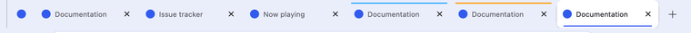
color: rgb(21, 20, 26)border-top-color: rgb(21, 20, 26)font-size: 11pxheight: 44pxopacity: 1
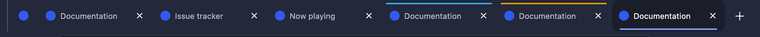
color: rgb(251, 251, 254)border-top-color: rgb(251, 251, 254)font-size: 11pxheight: 44pxopacity: 1
no rules in this repo target it
Styled by Firefox defaults only.
Selected tab
.tabbrowser-tab[selected]
The active tab. Most tab colour work targets this.
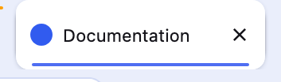
color: rgb(21, 20, 26)border-top-color: rgb(21, 20, 26)font-size: 11pxheight: 44pxopacity: 1
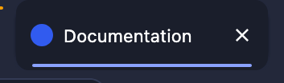
color: rgb(251, 251, 254)border-top-color: rgb(251, 251, 254)font-size: 11pxheight: 44pxopacity: 1
3 rules in this repo
| chrome/userChrome.css:69 | .tabbrowser-tab .tab-content { |
| chrome/userChrome.css:73 | .tabbrowser-tab[selected] .tab-content { |
| chrome/userChrome.css:80 | .tabbrowser-tab[selected] .tab-content::after { |
Pinned tabs container
#pinned-tabs-container
Holds pinned tabs; spacing here affects the join with normal tabs.
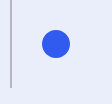
color: rgb(21, 20, 26)border-top-color: rgb(21, 20, 26)font-size: 11pxheight: 44pxopacity: 1
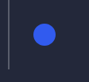
color: rgb(251, 251, 254)border-top-color: rgb(251, 251, 254)font-size: 11pxheight: 44pxopacity: 1
no rules in this repo target it
Styled by Firefox defaults only.
Tab close button
.tab-close-button
Per-tab close control. The install script can move it to the left.
present but not visible in this layout
color: rgb(21, 20, 26)border-radius: 5pxborder-top-color: rgb(21, 20, 26)font-size: 11pxpadding-top: 6pxmargin-inline-end: -4pxheight: 24pxopacity: 1
present but not visible in this layout
color: rgb(251, 251, 254)border-radius: 5pxborder-top-color: rgb(251, 251, 254)font-size: 11pxpadding-top: 6pxmargin-inline-end: -4pxheight: 24pxopacity: 1
no rules in this repo target it
Styled by Firefox defaults only.
New tab button
#tabs-newtab-button
The + at the end of the tab strip.
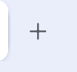
color: rgb(21, 20, 26)border-top-color: rgb(21, 20, 26)font-size: 11pxheight: 44pxopacity: 1
color: rgb(251, 251, 254)border-top-color: rgb(251, 251, 254)font-size: 11pxheight: 44pxopacity: 1
no rules in this repo target it
Styled by Firefox defaults only.
Tab audio button
.tab-audio-button
Speaker / mute toggle shown on a tab that is playing sound.
present but not visible in this layout
color: rgb(21, 20, 26)border-top-color: rgb(21, 20, 26)font-size: 11pxmargin-inline-end: 5.5pxheight: fit-contentopacity: 1
present but not visible in this layout
color: rgb(251, 251, 254)border-top-color: rgb(251, 251, 254)font-size: 11pxmargin-inline-end: 5.5pxheight: fit-contentopacity: 1
no rules in this repo target it
Styled by Firefox defaults only.
Container tab
.tabbrowser-tab[usercontextid]
A tab opened in a container, carrying its identity colour.
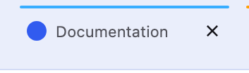
color: rgb(21, 20, 26)border-top-color: rgb(21, 20, 26)font-size: 11pxheight: 44pxopacity: 1
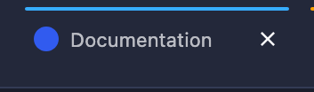
color: rgb(251, 251, 254)border-top-color: rgb(251, 251, 254)font-size: 11pxheight: 44pxopacity: 1
3 rules in this repo
| chrome/userChrome.css:69 | .tabbrowser-tab .tab-content { |
| chrome/userChrome.css:73 | .tabbrowser-tab[selected] .tab-content { |
| chrome/userChrome.css:80 | .tabbrowser-tab[selected] .tab-content::after { |
Toolbar buttons
Back button
#back-button
Navigation back.
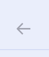
color: rgb(27, 31, 42)border-top-color: rgb(27, 31, 42)font-size: 11pxheight: 42pxopacity: 0.5
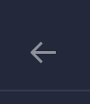
color: rgb(238, 241, 248)border-top-color: rgb(238, 241, 248)font-size: 11pxheight: 42pxopacity: 0.5
no rules in this repo target it
Styled by Firefox defaults only.
Reload button
#reload-button
Reload / stop.
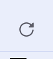
color: rgb(27, 31, 42)border-top-color: rgb(27, 31, 42)font-size: 11pxheight: 42pxopacity: 1
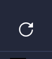
color: rgb(238, 241, 248)border-top-color: rgb(238, 241, 248)font-size: 11pxheight: 42pxopacity: 1
no rules in this repo target it
Styled by Firefox defaults only.
Firefox View button
#firefox-view-button
The leftmost control on the tab strip.
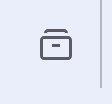
color: rgb(21, 20, 26)border-top-color: rgb(21, 20, 26)font-size: 11pxheight: 44pxopacity: 1
color: rgb(251, 251, 254)border-top-color: rgb(251, 251, 254)font-size: 11pxheight: 44pxopacity: 1
no rules in this repo target it
Styled by Firefox defaults only.
App menu button
#PanelUI-menu-button
The hamburger. Its panel is a native OS window and cannot be screenshotted.
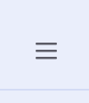
color: rgb(27, 31, 42)border-top-color: rgb(27, 31, 42)font-size: 11pxheight: 42pxopacity: 1
color: rgb(238, 241, 248)border-top-color: rgb(238, 241, 248)font-size: 11pxheight: 42pxopacity: 1
no rules in this repo target it
Styled by Firefox defaults only.
Extensions button
#unified-extensions-button
Unified extensions control.
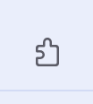
color: rgb(27, 31, 42)border-top-color: rgb(27, 31, 42)font-size: 11pxheight: 42pxopacity: 1
color: rgb(238, 241, 248)border-top-color: rgb(238, 241, 248)font-size: 11pxheight: 42pxopacity: 1
no rules in this repo target it
Styled by Firefox defaults only.
Account button
#fxa-toolbar-menu-button
Firefox Account menu.
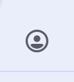
color: rgb(27, 31, 42)border-top-color: rgb(27, 31, 42)font-size: 11pxheight: 42pxopacity: 1
color: rgb(238, 241, 248)border-top-color: rgb(238, 241, 248)font-size: 11pxheight: 42pxopacity: 1
no rules in this repo target it
Styled by Firefox defaults only.
Find bar
Find bar
findbar
Docked at the bottom of the content area when you press Ctrl/Cmd+F.

background-color: rgb(234, 238, 251)color: rgb(21, 20, 26)border-top-width: 1pxborder-top-color: rgb(211, 219, 245)font-size: 11pxpadding-top: 6pxheight: 41pxopacity: 1
background-color: rgb(35, 40, 58)color: rgb(251, 251, 254)border-top-width: 1pxborder-top-color: rgb(51, 59, 85)font-size: 11pxpadding-top: 6pxheight: 41pxopacity: 1
1 rule in this repo
| chrome/userChrome.css:92 | findbar { |
Content
Content area
#browser
Where the page renders. Styled by userContent.css rather than userChrome.css.
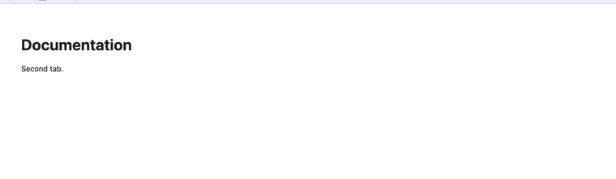
background-color: rgb(249, 249, 251)color: rgb(21, 20, 26)border-top-color: rgb(21, 20, 26)font-size: 11pxheight: 363.5pxopacity: 1
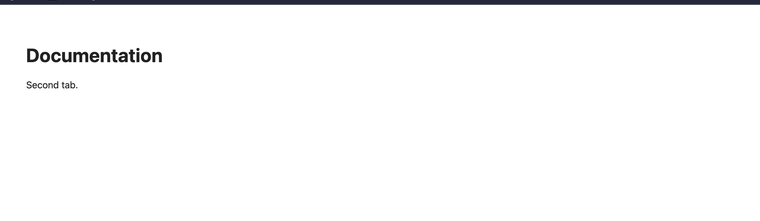
background-color: rgb(43, 42, 51)color: rgb(251, 251, 254)border-top-color: rgb(251, 251, 254)font-size: 11pxheight: 363.5pxopacity: 1
no rules in this repo target it
Styled by Firefox defaults only.